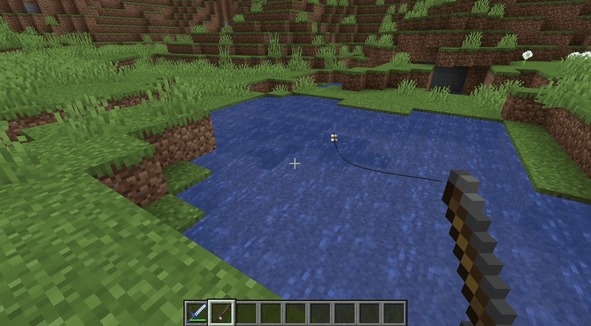

How to Fish in Minecraft
Starting & Guide
What is needed
- Required Resources
- Crafting Bench
- Tree Trunk x1
or
- Wood Planks x4
Step 1: Gather your Resources

You will need to be luck and find two string, or kill spiders for string
- Killing one or two spiders should grant you all the string you need if you are at the difficulty easy or higher
- Chopping a tree will give you trunks
- take those trunks and craft them into planks
- four planks can then be made into a crafting bench
- place the crafting bench and open it; make at least three sticks if you have not already
- place the sticks diagonally in the box with two string in the same column as the stick in one of the upper corners, one under other
- craft the item
Step 2
Find a body of water
Step 3: Cast your line

Start by pressing the LMB/Left-trigger/L2
- wait for a trail to appear in the water
- the trail will close in on your line
- wait for your bobber to sink & sound queue
- quickly press the same button you used to cast
Furthur Information
Fishing can be a good way to snowball earlier on
You can fish for food, but also you can get equipment and other useful items
- You can find bows that are enchanted to be more powerful
- You can find better fishing rods to improve your gains
- You can find enchanted books to enhance your other gear
- it is a free exp farm
Tips
- Find a fishing rod with "luck of the sea","lure", and also one with "mending" to increase gains as well as keep you rod from breaking
- build a grind stone and a anvil to disenchant items for exp or merg items to make them better
- look out for curses like, "curse of vanishing", where items will disappear when you die if that item has that trait
Guide video on how to fish in Minecraft by PrimalGaming
back to top